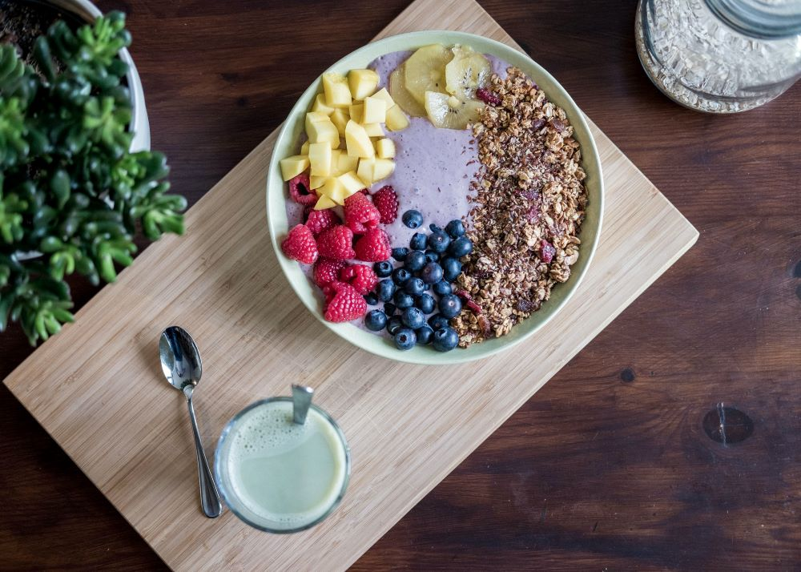

After your workout, take a few minutes to cool down by doing some light cardio or stretching. This will help your body transition from the high-intensity workout to a state of rest.
It's important to stay hydrated before, during, and after your workout. Drink plenty of water to replace fluids lost during the workout.
Eating nutritious foods after your workout can help your body recover faster. A meal that includes carbohydrates, protein, and healthy fats can help rebuild muscle tissue and replenish energy stores.

Getting enough rest is essential for muscle recovery. Aim for at least 7-8 hours of sleep each night to allow your body to repair and rebuild muscle tissue.
Stretching can help improve flexibility, reduce muscle soreness, and increase blood flow to the muscles. Try to stretch after your workout or throughout the day to help your muscles recover.
massage can help reduce muscle soreness and improve blood flow to the muscles. If you don't have access to a massage therapist, you can use a foam roller or massage ball to target sore areas.
If you feel tired or sore after a workout, take a break or reduce the intensity of your next workout. Pushing through the pain can lead to injury and longer recovery time.
Overall, recovery is an important part of any workout routine. By taking care of your body and allowing it to rest and repair, you can avoid injury and improve your overall fitness level.